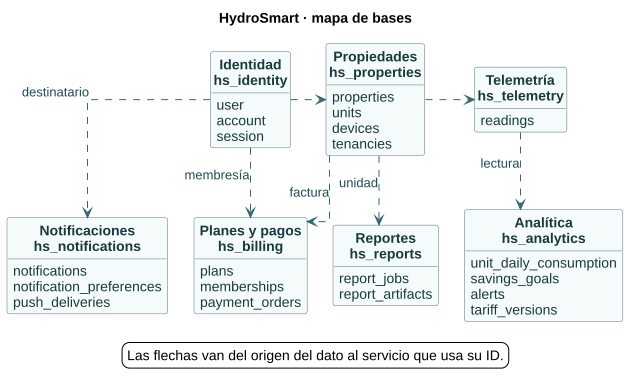

HydroSmart · modelo de datos
ERD en PlantUML
16 láminas · 58 tablas SQL · 365 columnas · 18 claves foráneas
Mapa general de las bases
Tamaño natural para leer las columnas

Referencias lógicas de la lámina
| Campo | Identificador de origen | Uso |
|---|